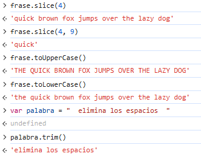
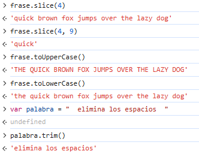

La característica más importante de JacaScript (JS), la cual la diferencia de cualquier otro lenguaje de programación, es el hecho de que es el único lenguaje que los navegadores web son capaces de interpretar sin la necesidad de un intermediario. El resto de lenguajes deben estar en un servidor que realice el proceso para convertirlos en interpretables, pero Javasript puede utilizarse directamente en la web. Por esta razón, podemos utilizar JS directamente en nuestro navegador por medio de las herramientas para desarrolladores. Este acceso nos permite además poder utilizar JS para automatizar procesos como, por ejemplo, clicar una gran cantidad de botones sin tener que hacerlo manualmente.
Es importante saber que la mayoría de aplicaciones y páginas web están escritas en parte o completamente en Javascript, por lo que queda claro que es un lenguaje muy importante dentro del mundo de la programación y el desarrollo web; tanto para la creación de aplicaciones para ordenador como para los diseñados para teléfonos inteligentes o "smartphones".
En JavaScript, como en otros muchos lenguajes de programación, tenemos varios tipos de datos y voy a presentar aquí los más básicos:
Voy a presentar a continuación estos tipos de datos vistos y la manera de seleccionar datos concretos dentro de arreys y objetos:
Hay que tener en cuenta que cada tipo de dato cuenta con funciones específicas que nos permiten tratarlos de distinta manera, aunque hay funciones que pueden aplicarse a todos ellos.
Como ejemplo de funciones que pueden utilizarse con distintos tipos de datos, tenemos la pseudo función length, esta nos da la longitud del elemento que le proporcionamos. Lo que quiero que se entienda con este ejemplo es cómo puede una misma función devolver distintos tipos de respuesta. Si utilizamos length con una cadena, nos devuelve la cantidad de caracteres, pero si la utilizamos con un arrey, nos devuelve la cantidad de elementos dentro de la lista que están separadas por una coma.

Recursos:
Data StructuresHay muchas funciones que se pueden utilizar con el tipo de datos string o cadena; a continuación presentaré algunas de las más importantes:
A continuación voy a compartir ejemplos de lo que ocurre al utilizar cada una de las funciones anteriores:

 

Recursos:
indexOf y search match y search StringUna condicional, como su nombre indica, se utiliza para generar una condición que controle el flujo de nuestro programa. Esto es, podemos decir: quiero que ocurra esto cuando se cumpla esta condición y esto otro cuando no se cumpla la condición. La sintaxis básica de las condicionales es la siguiente:
if (condición) { acciones que queremos que ocurran si se cumple la condición } else { acciones que queremos que ocurran si no se cumple la condición }
Además de esta sintaxis básica, tenemos otra clave que nos permite concatenar distintas condiciones:
if (condición) {
acciones que queremos que ocurran si se cumple esta condición
} else if (condición) {
acciones que queremos que ocurran si se cumple esta condición
}
else {
acciones que queremos que ocurran si no se cumplen las condiciones anteriores
}
Puede que en algunos casos no sea necesario añadir el último "else" porque se han cubierto todas las condiciones posibles, pero es bueno añadirlo para evitar problemas que no hayamos tenido en cuenta. En el caso anterior solo he añadido una condición "else if", pero podría añadir todas las que quisiese.
A continuación propongo un ejemplo de uso de las condicionales:
En el primer ejemplo, podemos ver una condición que devuelve un mensaje cuando la edad es igual a 22 y otro cuando no lo es. Podemos ver, también, la diferencia de uso del signo = doble y triple. En los ejemplos podemos ver que el número de la variable es igual al de la condición en todos los casos, pero vemos que no todas las veces obtenemos el mismo resultado. La diferencia está en que el doble símbolo acepta dos tipos de datos que contienen el mismo número, es decir, lee 22 (número) y "22" (cadena) del mismo modo y considera válidas a ambas. Por el contrario, el triple símbolo busca que, además de ser el mismo número, sea el mismo tipo de dato, por lo que considera que "22" y 22 son diferentes. Es importante conocer esta diferencia para saber cuál versión necesitamos en nuestros programas.

En el segundo ejemplo vemos el uso de else if para añadir condiciones y el uso de mayor que (>), mayor o igual (>=), menor que (<), menor o igual (<=). Además, vemos el doble símbolo && que significa "y", es decir, ambas condiciones a la derecha e izquierda de este símbolo deben cumplirse para que las acciones dentro de ese bloque se lleven a cabo. Hemos visto los comparadores == y === para comprobar si dos elementos son iguales o idénticos, pero podemos utilizar también sus contrapartes != (son diferentes en valor) y !== (son diferentes tanto en valor como en tipo de dato).
Hemos mencionado que && indica que ambas condiciones se deben cumplir, pero tenemos otros símbolos que nos permiten que se lleve a cabo la acción si se cumple una de las dos condiciones, esto es la doble barra ||. En este caso, si se cumple la condición a su izquierda, pero no la de su derecha, se considera que la condición se cumple; y lo mismo ocurre si se cumple la de su derecha, pero no la de su izquierda.
Recursos:
CondicionalesLos operadores ternarios nos brindan una forma de crear condiciones en una sola línea de código. Este tipo de condicional reducido nos permite crear condicionales en lugares donde solo podemos escribir código en una sola línea, como puede ser el caso de incorporar un script JS dentro de un elemento de otro lenguaje de programación. De momento, lo importante es entender cómo funciona su sintaxis para cuando te encuentres en una situación en la que no te queda más remedio que crear tu condicional en una sola línea.
La sintaxis básica de un operador ternario es la siguiente:
condición ? acción que se debe llevar a cabo si la condición se cumple :
acción que se debe llevar a cabo si la condición no se cumple
Además, podemos crear varias condiciones dentro del operador ternario:
condición ? acción que se debe llevar a cabo si la condición se cumple :
otra condición ? acción que se debe llevar a cabo si esta otra condición se cumple :
acción que se debe llevar a cabo si la condición no se cumple
Esta última opción se entiende mejor si colocamos unos paréntesis:
condición ? acción que se debe llevar a cabo si la condición se cumple :
(otra condición ? acción que se debe llevar a cabo si esta otra condición se cumple :
acción a llevar a cabo si la condición no se cumple)
En este ejemplo primero se vería si la primera condición se cumple; si esta no se cumple, se revisaría si la segunda condición se cumple, si no se cumple se llevaría a cabo la última acción. A continuación mostraré cómo redactaríamos las condicionales que hemos creado en el anterior apartado en este formato:

Como se puede apreciar, este formato es un poco más complicado de leer y se puede complicar más al ir añadiendo más condiciones. Para ayudar con la lectura de ternarios, podemos dividirlos en distintas líneas, aunque todas ellas seguirían considerando una sola línea.
Recursos:
TernariosLas funciones son bloques de código que utilizamos para llevar a cabo una acción. Hay funciones ya creadas dentro del lenguaje Javascript que podemos utilizar sin tener que crear nuestras propias funciones, pero para acciones más concretas, podemos crear nuestras propias funciones. Para crear estas funciones tenemos varias formas de redacción que voy a exponer a continuación.
Por un lado, tenemos las declaraciones de función; estas serían la forma más convencional de crear una función y la forma más clara en cuanto a su lectura. Este tipo de funciones se utiliza principalmente en el alcance global; este alcance global se refiere al programa general que no está dentro de ningún otro bloque de código y, por consiguiente, está accesible para todo el programa. La sintaxis de las declaraciones de función es la siguiente:
function nombre(parámetros) {
acción de la función
}
Como vemos, tenemos la palabra clave "function" seguida del nombre que le queramos dar a la función y los paréntesis en los que podemos incluir o no parámetros; estos parámetros no son obligatorios y son lo que en lenguajes como Pyhon se llaman argumentos. Después, abrimos corchetes y redactamos entre ellos la acción que queremos que la función lleve a cabo. Cuando queramos llamar la función, deberemos escribir el nombre de la función y pasar los parámetros en caso de que fuesen necesarios.
nombre(parámetros);
Este sería un ejemplo del uso de una declaración de función:
Como vemos en este ejemplo, el nombre de la función es suma y los parámetros son numUno y numDos. Los nombres de los parámetros no son palabras específicas, sino nombres que creemos que describen los valores que necesitas introducir al llamar la función. En este caso, es una suma y los parámetros serán dos números. Después, como queremos que la función realice la suma de los parámetros, hacemos que la función devuelva la suma de los dos parámetros por medio de la palabra clave "return". Para llamar la función hemos escrito el nombre de la función y hemos añadido entre paréntesis los números que queremos sumar.
Ahora vamos a hablar de la expresión de funciones. Esta forma de crear funciones suele utilizarse dentro de bloques de código, como puede ser una variable, un objeto, etc. Esto no significa que no se pueda utilizar cualquier tipo de función donde queramos, sino que seguir estas pautas se considera buenas prácticas y facilita que cualquier programador entienda nuestro código y pueda trabajar con él de forma más sencilla. Estas funciones nos permiten crean funciones anónimas, ya que pueden funcionar sin darles un nombre (aunque sí pueden tener nombre). La sintaxis de las expresiones de función es la siguiente:
var nombre = function () {
acción a llevar a cabo por la función
}
En este caso hemos creado la función dentro de una variable, aunque no es la única opción. La mayor diferencia con la declaración de función sería al llamar la función, ya que, en este caso, utilizaremos el nombre de la variable:
nombre();
Si seguimos con el ejemplo anterior, nuestra función se podría ver así:
Vemos que el resultado es el mismo y la sintaxis, muy parecida. Otra diferencia de las expresiones de función respecto a la declaración de función es que las primeras se pueden llamar antes de crear la función.
Por último, me gustaría hablar de las funciones flecha. Estas son expresiones de función que se pueden redactar de forma más acotada. El ámbito de uso es parecido al de las expresiones de función, pero más limitado. Se pueden redactar dentro de una variable de la siguiente manera:
var nombre = parámetro => acción
Si hay más de un parámetro, estos se escriben entre paréntesis y separadas por comas. Se llaman igual que las expresiones de función. El ejemplo de la suma que hemos visto con el resto de tipos de función se vería de la siguiente manera:
Respecto a todas las formas de funciones que hemos visto, cabe recalcar que estas son las formas más básicas de utilizarlos, pero existen formas más complejas en combinación de otros elementos.
Recursos:
Funciones flecha Declaración de función Expresión de función FuncionesLa palabra clave "this" se utiliza para hacer referencia a un elemento concreto ubicado dentro de una función, por ejemplo. Al crear un programa podemos utilizar el mismo nombre para más de una variable y esto puede generar errores, por ello, cuando estamos trabajando con una variable dentro de una clase, una función, etc. podemos utilizar "this" para hacer referencia al nombre concreto ubicado dentro de la clase o función en la que estamos.
La clave this puede hacer referencia a diferentes objetos dependiendo del lugar del que se le llame.
Un posible ámbito de uso de la palabra clave "this" es en una función constructora. Si lo comparamos con el lenguaje Python, this equivaldría a self en las funciones constructoras de una clase de Python. Esta función se vería de la siguiente manera:
function nombre (parámetro) {
this.parámetro = parámetro
}
Y crearíamos un objeto de este modo:
variable = new nombre(parámetro)
Vamos a ver un ejemplo para que quede más claro:
Referencias:
this en JS